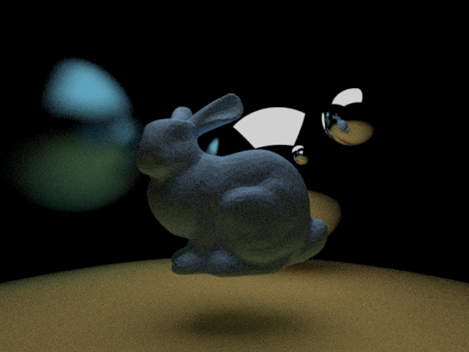
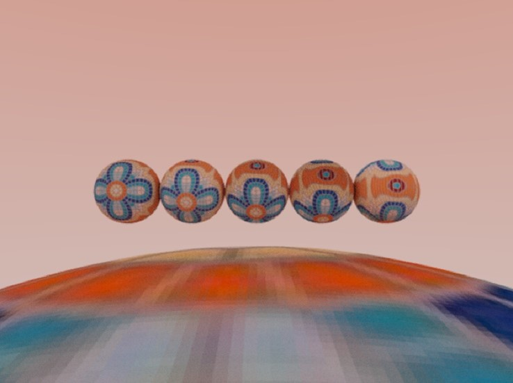
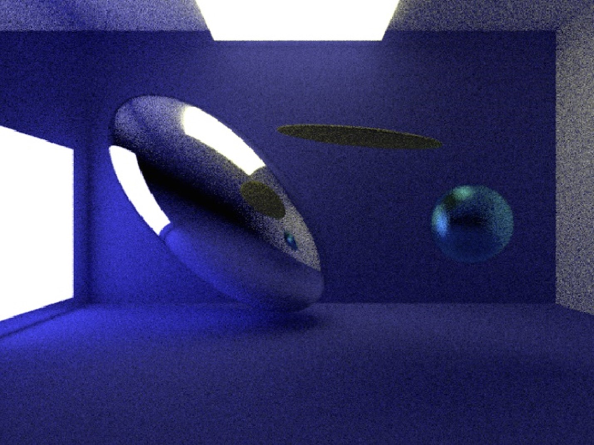
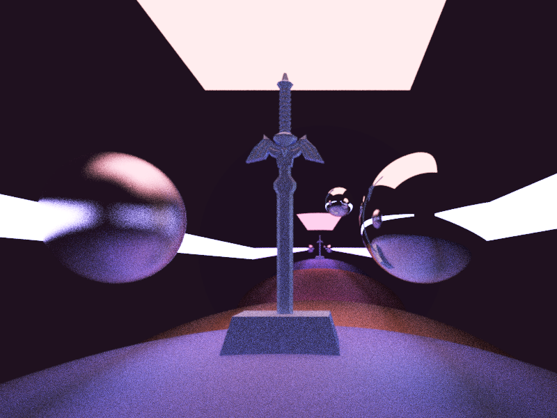
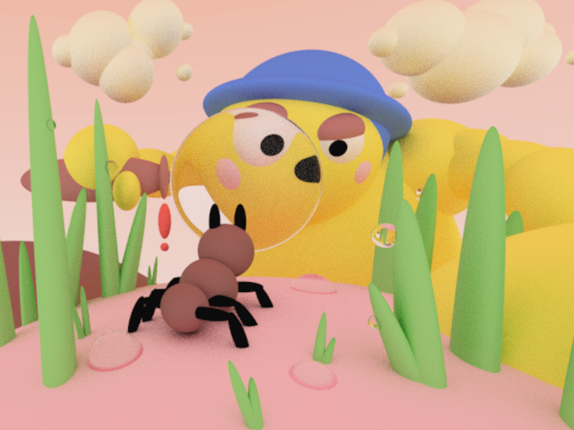
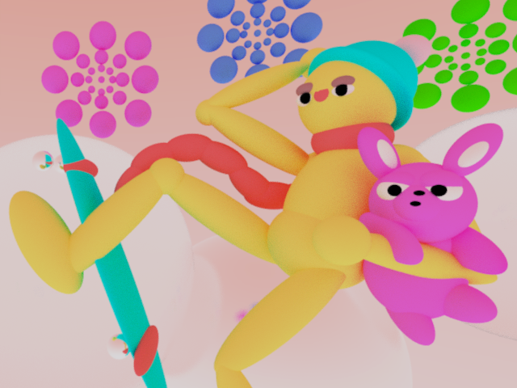
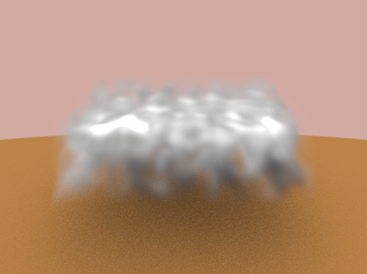
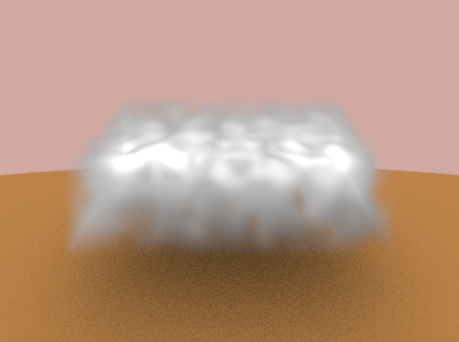
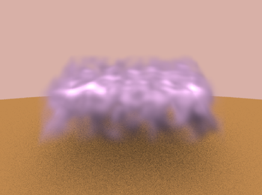
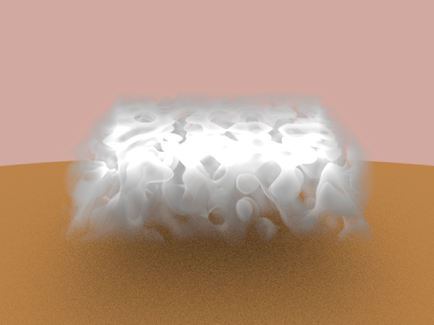

The raytracer I built supported several features– rendering primitive shapes, 3d models, reflection, refraction, transformations, texturing, and emmissive materials. Below are some of the example outputs for my raytracer throughout the course.
     
We used .ppm files as input to place the shapes and models in our 3D scene. I also created a C# script in Unity to create a ppm file based on shapes in the Unity 3D scene for easy placement, and I was able to create some fun renders with it.
For my final project, I wanted to create participating media using my renderer. This inclues fog, clouds, smoke, etc. I learned about how light gets scattered within the material, and also implimented a ray marching technique to calculate the density at every point. I added parameters such as densityMultiplier, lightAbsorption, lightColor, and Perlin Noise seed in order to create different variations of clouds.
   